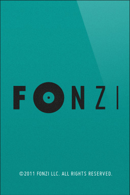

A mobile jukebox that lets the crowd control the music
Available on the app storeHow It Works
- For Hosts
- • Create a Party In Fonzi.
- • Plug your iPhone into speakers and start a party.
- • Your iTunes library becomes the jukebox for the party to control.
- For Guests
- • Find a party from the list of nearby parties.
- • Select songs to play from the hosts iTunes library.
- • Your top song request will play on your turn.